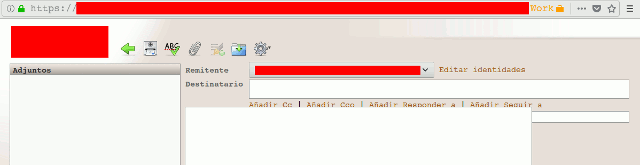
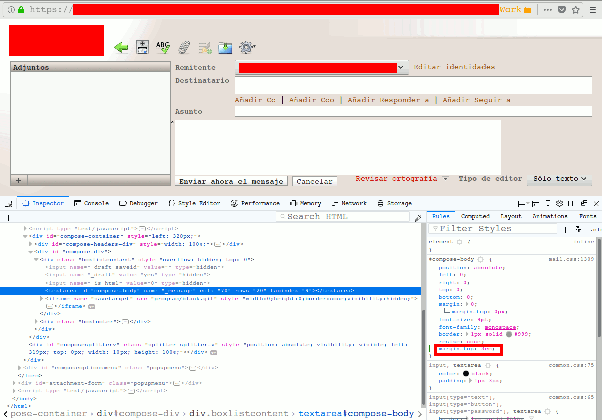

Corregir páginas web con greasemonkey
Problema
Debo escribir un email utilizando un cliente webmail desde Firefox.
Como una imagen dice más que mil palabras:

Como puede verse el area del mensaje se superpone a la linea del asunto del email.
El cliente webmail es roundcube (en el fuente de la página
aparece el javascript var rcmail = new rcube_webmail();), desconozco la
versión y no pude obtenerla de las páginas del roundcube.
La instalación de Firefox que estoy usando es la 60.0.1, 64-bit linux, pero el problema lo he tenido antes con versiones anteriores.
Solución manual
Presionando F12 para abrir las Web development tools en la ventana del
email, se utiliza el node picker para seleccionar el area del
mensaje, encontrandose que tiene el id compose-body. Editando el css y
agregando margin-top: 5em; encontramos que se evita el solapamiento.

Ahora interesa no tener que estar realizando la misma acción cada vez que se va a escribir un email.
Solución automática con Greasemonkey
Para solucionar el problema se utilizará greasemonkey, que permite administrar userscripts: scripts (usualmente en javascript) que permiten modificar las páginas web al ser cargadas.
La documentación (escasa), se puede encontrar en la wiki de greasemonkey.
Una mejor fuente es el libro Greasemonkey Hacks, que puede verse en archive.org. Conviene tener en cuenta el post relativo a las incompatibilidades introducidas en la versión 4.
Se pasa a crear el script.
Como nombre de archivo se utiliza fix-roundcube-compose-overlap.user.js. Notar
que la extensión .user.js es necesaria para que el script sea instalado por
greasemonkey.
A continuación se debe escribir la metadata del script:
// ==UserScript==
// @name fix-roundcube-compose-overlap
// @namespace jumapico.uy/greasemonkey
// @version 1
// @grant none
// @match *://*/webmail/?*_task=mail*_action=compose*
// @description Fix overlapping issue when compose email in roundcube webmail
// ==/UserScript==
Para más detalles sobre el elemento @match ver la documentación de Match
Patterns de google.
El cuerpo del script es simple: una función javascript para insertar un nodo de
tipo style cuyo contenido es el encontrado previamente al hacer el arreglo
manual:
function insert_style(css) {
var head = document.getElementsByTagName('head')[0],
style = document.createElement('style');
style.type = 'text/css';
style.appendChild(document.createTextNode(css));
head.appendChild(style);
}
insert_style('#compose-body { margin-top: 3em; }');
La referencia utilizada para javascript es MDN web docs.
El archivo completo se encuentra en fix-roundcube-compose-overlap.user.js (recordar desactivar greasemonkey para descargar el archivo).
Para instalarlo (y también hacer pruebas durante el desarrollo), se utiliza el
servidor web standalone de python3 ejecutando
python3 -m http.server 8000 en el mismo directorio en que se encuentra el
script y abriendo en el navegador web la url
http://127.0.0.1:8000/fix-roundcube-compose-overlap.user.js.